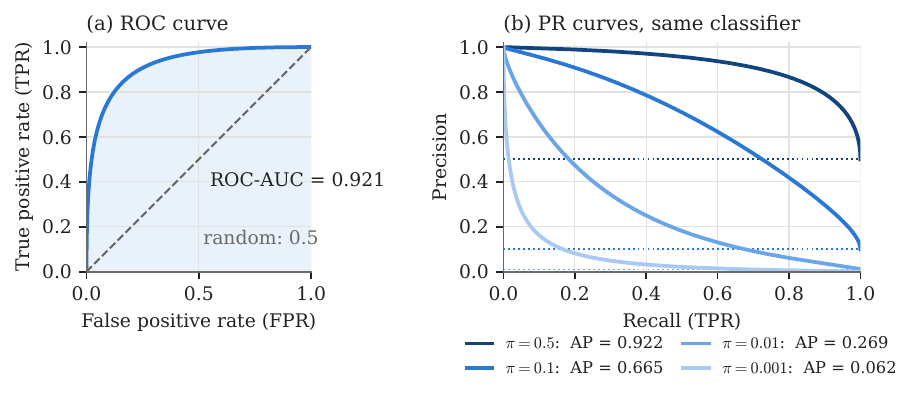
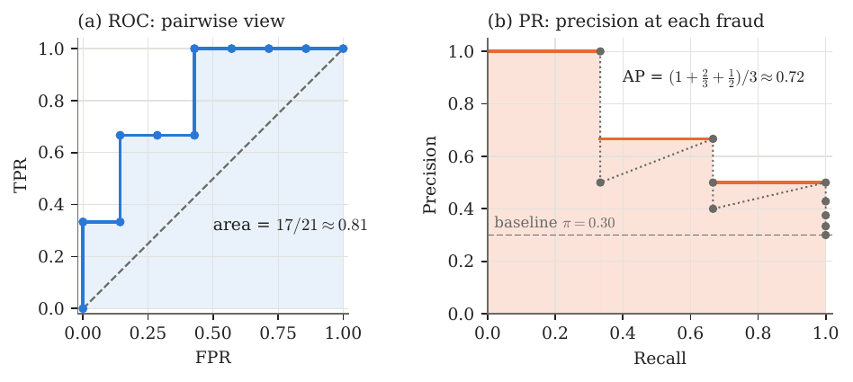
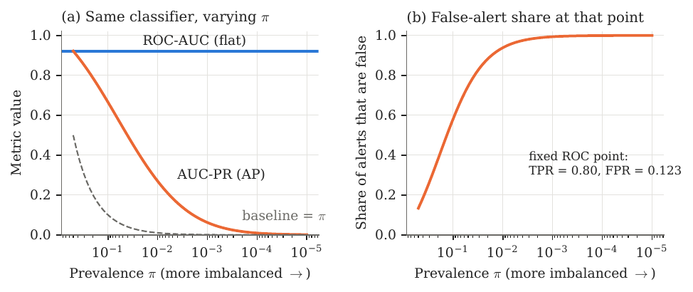
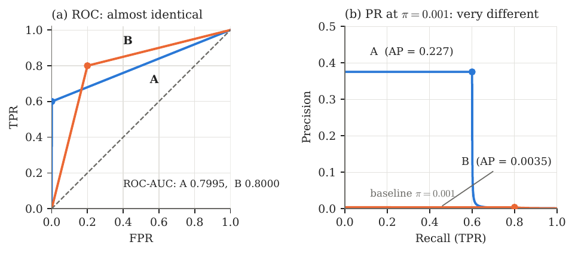

Classification basics¶
Setup and notation¶
We consider binary classification with a label \(Y\in\{0,1\}\), where \(1\) is the positive class (e.g. a fraudulent transaction) and \(0\) the negative class. A model produces a real-valued score \(S=s(X)\), higher meaning “more likely positive”. A threshold \(t\) turns the score into a decision
Let \(P\) and \(N\) be the numbers of positive and negative cases and \(n=P+N\). Two quantities describe how imbalanced the data are:
For a fraud rate of \(0.1\%\) we have \(\pi=0.001\) and \(k=999\). Finally, \(S^{+}\) and \(S^{-}\) denote the score of a randomly drawn positive and negative case respectively; their distributions are the class-conditional score distributions.
The confusion matrix¶
Fixing a threshold \(t\), every case falls into exactly one cell:
| Predicted positive | Predicted negative | |
|---|---|---|
| Actual positive (\(P\) cases) | TP (true positive) | FN (false negative) |
| Actual negative (\(N\) cases) | FP (false positive) | TN (true negative) |
so that \(\mathrm{TP}+\mathrm{FN}=P\) and \(\mathrm{FP}+\mathrm{TN}=N\). Everything below is a function of these four counts.
Rates conditioned on the true class¶
The first four metrics divide by a row total of the confusion matrix. Each is therefore a conditional probability given the true class, which is why none of them depends on \(\pi\).
True positive rate (TPR)
Also known as recall, sensitivity, hit rate, detection rate, or power (\(=1-\) Type II error rate). It is the probability or proportion of actual positive cases that are correctly flagged as positive.
False negative rate (FNR)
Also known as the miss rate or Type II error rate. It is the proportion of actual positive cases that are missed.
False positive rate (FPR)
The false positive rate (FPR)—also known as fall-out, false alarm rate, or Type I error rate—is the probability or proportion of actual negative cases that are incorrectly flagged as positive.
True negative rate (TNR)
Also known as specificity or selectivity. It is the proportion of actual negative cases correctly left unflagged.
Rates conditioned on the prediction¶
The next three metrics divide by a column total: they answer “given that the model said positive (negative), how often is it right?”. They mix the two classes in the proportion \(P:N\), so they do depend on \(\pi\).
Precision (positive predictive value, PPV)
The proportion of flagged cases that are truly positive. Its complement is the false discovery rate, \(\mathrm{FDR}=1-\mathop{\mathrm{Prec}}\): the share of alerts that are false alarms.
Negative predictive value (NPV)
The proportion of unflagged cases that are truly negative.
Single-number summaries at one threshold¶
Accuracy and balanced accuracy
Accuracy weights the two classes by their frequency, so under heavy imbalance it is dominated by the majority class (the accuracy paradox: with \(\pi=0.001\), a model that never flags anything has \(\mathrm{Acc}=99.9\%\) and \(\mathop{\mathrm{TPR}}=0\)). Balanced accuracy removes the dependence on \(\pi\) by weighting both classes equally.
\(F_1\) and \(F_\beta\) scores
\(F_1\) is the harmonic mean of precision and recall at a single threshold:
The harmonic mean punishes imbalance between the two: \(\mathop{\mathrm{Prec}}=1\) with \(\mathop{\mathrm{Rec}}=0.01\) gives \(F_{1}\approx0.02\), not \(0.5\). The general form \(F_\beta=\dfrac{(1+\beta^2)\,\mathop{\mathrm{Prec}}\cdot\mathop{\mathrm{Rec}}}{\beta^2\,\mathop{\mathrm{Prec}}+\mathop{\mathrm{Rec}}}\) treats recall as \(\beta\) times as important as precision, so \(\beta>1\) favours recall. Like precision, \(F_\beta\) ignores true negatives.
Matthews correlation coefficient (MCC)
The correlation between prediction and truth, using all four cells:
The bridge identity: how \(\pi\) enters¶
The two families above are linked by the class ratio \(k=N/P\). This is the single most important identity in these notes.
Proposition 1: Prevalence enters through \(k\)
For every threshold \(t\),
Proof
Proof. By definition \(\mathrm{TP}=P\cdot\mathop{\mathrm{TPR}}\) and \(\mathrm{FP}=N\cdot\mathop{\mathrm{FPR}}\). Hence
For \(F_1\), note \(2\mathrm{TP}+\mathrm{FP}+\mathrm{FN} = 2P\,\mathop{\mathrm{TPR}}+N\,\mathop{\mathrm{FPR}}+P(1-\mathop{\mathrm{TPR}})=P(1+\mathop{\mathrm{TPR}}+k\,\mathop{\mathrm{FPR}})\), so \(F_{1}= 2P\,\mathop{\mathrm{TPR}}/\big(P(1+\mathop{\mathrm{TPR}}+k\,\mathop{\mathrm{FPR}})\big)\). The accuracy formula was shown above. ◻
Read this identity slowly: \(\mathop{\mathrm{TPR}}\) and \(\mathop{\mathrm{FPR}}\) are properties of the classifier alone (they are conditional on the class), while \(k\) is a property of the dataset. Whenever \(k\) is large, even a tiny \(\mathop{\mathrm{FPR}}\) is multiplied by a huge number inside the denominator of precision.
| Metric | Conditions on | Uses TN? | Depends on \(\pi\)? |
|---|---|---|---|
| TPR (recall), FNR | true class | no | no |
| FPR, TNR | true class | yes | no |
| Precision, FDR | prediction | no | yes |
| NPV | prediction | yes | yes |
| Accuracy | both | yes | yes |
| Balanced accuracy | true class | yes | no |
| \(F_1\), \(F_\beta\) | both | no | yes |
- Which metrics depend on the class balance.
Threshold-free summaries: ROC-AUC and AUC-PR¶
All the metrics so far describe one threshold \(t\). As \(t\) sweeps from \(+\infty\) down to \(-\infty\), the classifier flags more and more cases and \((\mathop{\mathrm{FPR}},\mathop{\mathrm{TPR}})\) moves from \((0,0)\) to \((1,1)\). Tracing this path under two different choices of axes gives the two curves.
The ROC curve and ROC-AUC¶
Definition 2: ROC curve
The receiver operating characteristic curve is the set of points \(\big(\mathop{\mathrm{FPR}}(t),\mathop{\mathrm{TPR}}(t)\big)\) over all thresholds \(t\).
A random classifier traces the diagonal \(\mathop{\mathrm{TPR}}=\mathop{\mathrm{FPR}}\); a perfect one passes through the corner \((0,1)\). The curve is unchanged by any strictly increasing transformation of the scores, since only the ranking matters.
Definition 3: ROC-AUC
Theorem 4: Probabilistic interpretation
the probability that a randomly chosen positive case is scored above a randomly chosen negative case.
Proof
Proof. Assume continuous scores with density \(f^{-}\) for negatives (ties then have probability zero). Since \(\mathop{\mathrm{FPR}}(t)=\mathbb{P}(S^{-}>t)\), we have \(d\mathop{\mathrm{FPR}}=-f^{-}(t)\,dt\), and as \(t\) runs from \(+\infty\) to \(-\infty\) the FPR runs from \(0\) to \(1\). Therefore
Ties contribute half by the usual trapezoid convention. ◻
So \(\mathop{\mathrm{AUC\text{-}ROC}}=0.5\) means random ranking and \(1\) means every positive is ranked above every negative. Note what does not appear in this definition: the proportion of positives.
The precision–recall curve and AUC-PR¶
Definition 5: PR curve
The precision–recall curve is the set of points \(\big(\mathop{\mathrm{Rec}}(t),\mathop{\mathrm{Prec}}(t)\big)=\big(\mathop{\mathrm{TPR}}(t),\mathop{\mathrm{Prec}}(t)\big)\) over all thresholds \(t\).
A classifier with no skill (scores independent of the label) has \(\mathop{\mathrm{Prec}}=\pi\) at every recall level, so the PR curve’s baseline is the horizontal line at the prevalence, not at \(0.5\). True negatives never appear on either axis.
Definition 6: AUC-PR / average precision
Sort cases by decreasing score and let \(\mathop{\mathrm{Prec}}_j,\mathop{\mathrm{Rec}}_j\) be the precision and recall after the \(j\)-th distinct threshold (with \(\mathop{\mathrm{Rec}}_0=0\)). The average precision is
Equivalently, \(\mathop{\mathrm{AP}}\) is the mean, over the \(P\) positive cases, of the precision measured at the rank of that positive.
Remark
Remark 1. “Average precision” is a recall-weighted average (weights \(\mathop{\mathrm{Rec}}_j-\mathop{\mathrm{Rec}}_{j-1}\)), not a plain average over thresholds. “AUC-PR” is used loosely: computing the area with the trapezoid rule instead of this step sum linearly interpolates between operating points, which is generally over-optimistic, and some benchmarks use an “interpolated” variant. Always state which one you report. The step-wise \(\mathop{\mathrm{AP}}\) is what sklearn.metrics.average_precision_score computes.

Figure 1 already contains the whole story: one classifier, one ROC curve, but a family of PR curves indexed by \(\pi\). Sections 3 and 4 make this precise.
Worked examples¶
A ten-transaction toy example¶
Rank ten transactions by model score from highest to lowest. Three are fraud (P), seven are legitimate (N), and the true labels in rank order are
Flagging the top \(j\) cases gives the operating points in Table 1.
| \(j\) | label | TP | FP | TPR (recall) | FPR | Precision | |
|---|---|---|---|---|---|---|---|
| 1 | P | 1 | 0 | \(1/3\) | \(0\) | \(1\) | |
| 2 | N | 1 | 1 | \(1/3\) | \(1/7\) | \(1/2\) | |
| 3 | P | 2 | 1 | \(2/3\) | \(1/7\) | \(2/3\) | |
| 4 | N | 2 | 2 | \(2/3\) | \(2/7\) | \(1/2\) | |
| 5 | N | 2 | 3 | \(2/3\) | \(3/7\) | \(2/5\) | |
| 6 | P | 3 | 3 | \(1\) | \(3/7\) | \(1/2\) | |
| 7 | N | 3 | 4 | \(1\) | \(4/7\) | \(3/7\) | |
| 8 | N | 3 | 5 | \(1\) | \(5/7\) | \(3/8\) | |
| 9 | N | 3 | 6 | \(1\) | \(6/7\) | \(1/3\) | |
| 10 | N | 3 | 7 | \(1\) | \(1\) | \(3/10\) |
Operating points when flagging the top \(j\) cases (\(P=3\), \(N=7\)).
ROC-AUC (pairwise view). By Theorem 4, count for each fraud how many legitimate cases it outranks: the first fraud beats all \(7\), the second beats \(6\), the third beats \(4\). Hence
AUC-PR (precision at each fraud). The precisions at the ranks of the three frauds are \(1\), \(2/3\) and \(1/2\) (the rows with label P in the table), so
Both views are drawn in Figure 2. Here \(\pi=0.3\) is not extreme, so the two metrics tell a broadly similar story. The next two examples show what happens when it is.

One classifier, increasing imbalance¶
Take the Gaussian score model of Figure 1: negatives score \(\mathcal N(0,1)\) and positives \(\mathcal N(\mu,1)\) with \(\mu=2\). Then \(\mathop{\mathrm{AUC\text{-}ROC}}=\Phi(\mu/\sqrt2)\approx0.921\). Keep the classifier exactly fixed and change only the prevalence \(\pi\), equivalently the number of legitimate cases the model has to sift through.
| Prevalence \(\pi\) | \(k=N/P\) | ROC-AUC | AUC-PR (AP) | Baseline (\(=\pi\)) | AP / \(\pi\) |
|---|---|---|---|---|---|
| 0.5 | 1 | 0.921 | 0.922 | 0.5 | 1.8 |
| 0.1 | 9 | 0.921 | 0.665 | 0.1 | 6.7 |
| 0.01 | 99 | 0.921 | 0.269 | 0.01 | 26.9 |
| 0.001 | 999 | 0.921 | 0.062 | 0.001 | 61.8 |
The same classifier at four prevalences (Gaussian model, \(\mu=2\); values by numerical integration of \(\int \mathop{\mathrm{Prec}}\,d\mathop{\mathrm{Rec}}\)).

Proposition 7: Negative inflation, a thought experiment
Replace every negative case by \(m\) copies drawn from the same distribution (so \(N\to mN\) and \(k\to mk\)). Then for every threshold \(\mathop{\mathrm{TPR}}(t)\) and \(\mathop{\mathrm{FPR}}(t)\) are unchanged, so the ROC curve and ROC-AUC are exactly unchanged, while \(\mathrm{FP}\to m\,\mathrm{FP}\) and \(\mathop{\mathrm{Prec}}\to\mathop{\mathrm{TPR}}/(\mathop{\mathrm{TPR}}+mk\,\mathop{\mathrm{FPR}})\), so the PR curve and \(\mathop{\mathrm{AP}}\) change.
Proof
Proof. \(\mathop{\mathrm{TPR}}\) conditions on positives, which were not touched; \(\mathop{\mathrm{FPR}}=\mathbb{P}(S^{-}>t)\) is a probability under the (unchanged) negative score distribution. Precision follows from Proposition 1 with \(k\) replaced by \(mk\). ◻
Going from \(\pi=0.1\) to \(\pi=0.01\) in Table 2 is exactly this experiment with \(m=11\): the ROC-AUC does not move (\(0.921\)) while AP drops from \(0.665\) to \(0.269\).
Remark
Remark 2. These are population values. With a finite sample the estimate is noisy, especially when there are few positives: a simulation with \(10^6\) negatives and about \(1000\) positives gave \(\mathop{\mathrm{AP}}\approx0.057\) against the population value \(0.062\), whereas the ROC-AUC estimate (\(\approx0.92\)) is stable. Report confidence intervals (e.g. by bootstrap) when \(P\) is small.
Two models that ROC-AUC cannot tell apart¶
Now compare two different classifiers on a data set of \(10^6\) transactions with \(1000\) frauds (\(\pi=0.001\), \(k=999\)). Model A catches \(60\%\) of the frauds while flagging only \(0.1\%\) of legitimate transactions; Model B catches \(80\%\) but flags \(20\%\) of legitimate transactions. Interpolating linearly to the corner \((1,1)\) gives the ROC curves in Figure 4(a).
| Model | TPR | FPR | TP | FP | Precision | Alerts |
|---|---|---|---|---|---|---|
| A | 0.60 | 0.001 | 600 | 999 | 0.375 | 1 599 |
| B | 0.80 | 0.20 | 800 | 199 800 | 0.004 | 200 600 |

An investigation team would obviously prefer A. B finds a third more fraud but buries it under two hundred times as many false alarms. ROC-AUC ranks B (marginally) first; AP ranks A first by a factor of \(64\). The analytic reason is the subject of the next section.
What each metric is trying to accomplish¶
| ROC-AUC | AUC-PR (AP) | |
|---|---|---|
| Question it answers | “If I draw a random fraud and a random legitimate case, how often is the fraud scored higher?” | “As I demand to catch more of the frauds, what fraction of my alerts are real?” |
| Axes | \(\mathop{\mathrm{TPR}}\) vs. \(\mathop{\mathrm{FPR}}\) | Precision vs. recall |
| Uses true negatives | Yes (through \(\mathop{\mathrm{FPR}}\)) | No |
| Random baseline | \(0.5\) | \(\pi\) (prevalence) |
| Depends on \(\pi\) | No (Theorem 4) | Yes (through \(k\); Section 4) |
| Cost of a false positive | Scaled by \(1/N\): ignores how many negatives there are | Scaled by \(k\): each false positive hurts more when negatives dominate |
| Where it looks | All FPR levels equally | The high-precision, low-FPR region |
| Best used when | Comparing rankers, or when the class ratio is unknown or will shift | Positives are rare and alerts are costly (fraud, screening, retrieval) |
Heuristic summary
ROC-AUC measures ranking quality in a world where both classes are equally represented; it is a property of the two score distributions. AUC-PR measures usefulness of the alert list in the world you will actually deploy in: it bakes the class ratio into precision. When positives are rare, that second question is the one that determines whether the model is useful, and Proposition 7 shows the first question cannot even see the difference.
Why AUC-PR is preferred under imbalance: a proof¶
Setting¶
Parametrise the ROC curve by recall. Assume (for simplicity) that the ROC curve is the graph of a continuous, nondecreasing function
(In general replace \(g\) by a generalised inverse; the formulas hold as Stieltjes integrals.) Let \(r^{*}=\sup\{r:g(r)=0\}\) be the fraction of positives the model can capture before its first false alarm (\(r^{*}=0\) for most real models). The data are described by the pair \((g,k)\): \(g\) is a property of the classifier, \(k\) of the dataset.
Lemma 8: Both areas in terms of \(g\)
Proof
Proof. The unit square is split by the ROC curve into the area under it, which is \(\mathop{\mathrm{AUC\text{-}ROC}}\), and the area to its left, which is \(\int_0^1 g(r)\,dr\) (integrating FPR against recall). The two add up to \(1\). The AP formula is \(\int \mathop{\mathrm{Prec}}\,d\mathop{\mathrm{Rec}}\) with \(\mathop{\mathrm{Prec}}=r/(r+k\,g(r))\) from Proposition 1. ◻
Lemma 8 is the whole argument in one line: \(k\) appears in AP and nowhere in ROC-AUC.
ROC-AUC is blind to imbalance; AP is not¶
Theorem 9: Behaviour of AP in \(k\)
For a fixed classifier (fixed \(g\)):
-
Monotonicity. \(\mathop{\mathrm{AP}}(k)\) is nonincreasing in \(k\), and strictly decreasing whenever \(g\) is not identically \(0\). Indeed \(\displaystyle \frac{\partial}{\partial k}\frac{r}{r+k\,g(r)}=-\frac{r\,g(r)}{(r+k\,g(r))^{2}}\le0 .\)
-
Baseline. For a no-skill classifier, \(g(r)=r\), so \(\mathop{\mathrm{AP}}=\int_0^1\frac{dr}{1+k}=\frac1{1+k}=\pi\).
-
Collapse. \(\displaystyle\lim_{k\to\infty}\mathop{\mathrm{AP}}(k)=r^{*}\). In particular \(\mathop{\mathrm{AP}}\to0\) whenever the model cannot reach positive recall with zero false positives.
-
ROC-AUC is constant. \(\mathop{\mathrm{AUC\text{-}ROC}}\) does not depend on \(k\) (Lemma 8).
Proof
Proof. (a) is the derivative computation, integrated over \(r\). (b) is direct substitution. For (c), the integrand \(r/(r+k\,g(r))\) is bounded by \(1\) and, as \(k\to\infty\), converges pointwise to \(1\) on \((0,r^{*})\) where \(g=0\), and to \(0\) on \((r^{*},1]\) where \(g>0\) and \(r>0\). By dominated convergence \(\mathop{\mathrm{AP}}(k)\to r^{*}\). (d) is Lemma 8. ◻
So the same classifier has ROC-AUC fixed and AP sliding from near \(1\) (balanced) down to \(r^{*}\), which is usually \(0\), as the data become more imbalanced, exactly as in Table 2. AP is therefore sensitive to the quantity (the class ratio) that determines the real-world cost of false alarms, while ROC-AUC is not.
The two metrics look at different parts of the ROC curve¶
Theorem 9 shows AP varies with \(k\) but does not yet explain why that is the right behaviour, nor how ROC-AUC could rank two models wrongly. The next result localises where each metric gets its value.
Theorem 10: Complementary regions
Fix \(\alpha\in(0,1)\).
-
ROC-AUC barely sees low FPR. The part of ROC-AUC contributed by \(\mathop{\mathrm{FPR}}\le\alpha\) is \(\int_{0}^{\alpha}\mathop{\mathrm{TPR}}\,d\mathop{\mathrm{FPR}}\le\alpha\).
-
High precision lives at low FPR. If \(\mathop{\mathrm{Prec}}\ge p\) at recall \(r\), then \(g(r)\le \dfrac{(1-p)\,r}{p\,k}\le\dfrac{1-p}{p\,k}\). In particular \(\mathop{\mathrm{Prec}}\ge\tfrac12\) forces \(\mathop{\mathrm{FPR}}\le 1/k\).
-
AP barely sees high FPR. The part of AP contributed by recall levels with \(g(r)\ge\alpha\) is at most \(\dfrac{1}{1+k\alpha}\).
Proof
Proof. (i) \(\mathop{\mathrm{TPR}}\le1\), so \(\int_0^\alpha \mathop{\mathrm{TPR}}\,d\mathop{\mathrm{FPR}}\le\int_0^\alpha d\mathop{\mathrm{FPR}}=\alpha\).
\(ii\) \(\mathop{\mathrm{Prec}}=r/(r+k\,g)\ge p\) rearranges to \(g\le r(1-p)/(pk)\), and \(r\le1\).
\(iii\) If \(g(r)\ge\alpha\) then \(\dfrac{r}{r+k\,g(r)}\le\dfrac{r}{r+k\alpha}\le\dfrac{1}{1+k\alpha}\), because \(r\mapsto r/(r+c)\) is increasing and \(r\le1\). The set of such \(r\) has measure at most \(1\). ◻
Corollary 11: Disjoint supports under imbalance
Let \(c>0\) and \(\alpha=c/k\). Then
For \(\pi=0.001\) (\(k=999\)) and \(c=9\): the region \(\mathop{\mathrm{FPR}}\le0.9\%\) contributes at most \(0.9\%\) of the area to ROC-AUC, yet it carries all but at most \(0.1\) of the value of AP.
In words: when \(k\) is large, ROC-AUC is decided almost entirely by the part of the curve at \(\mathop{\mathrm{FPR}}>c/k\), where precision is already poor, and AP is decided almost entirely by the part at \(\mathop{\mathrm{FPR}}\le c/k\), which ROC-AUC essentially ignores. Only the second region is operationally affordable, since an alert budget of \(B\) false alarms means \(\mathop{\mathrm{FPR}}\approx B/N=B/(kP)\).
Ranking reversal: ROC-AUC can pick the wrong model¶
Return to Models A and B of Section 3.3, with ROC curves through \((\mathop{\mathrm{FPR}},\mathop{\mathrm{TPR}})=(a,\rho)\) and linear interpolation to \((1,1)\) (\(a=0.001,\rho=0.6\) for A; \(a=0.2,\rho=0.8\) for B), and \(k=999\).
ROC-AUC. By the trapezoid rule, \(\mathop{\mathrm{AUC\text{-}ROC}}=\tfrac12 a\rho+\tfrac12(1-a)(1+\rho)\):
AP. On the first segment \(g(r)=ar/\rho\), so the integrand is the constant \(1/(1+ka/\rho)\) and the segment contributes
$\(\rho\cdot\frac{1}{1+ka/\rho}=\frac{\rho^{2}}{\rho+ka}:\qquad A:\ \frac{0.36}{0.6+0.999}=0.2251,\qquad B:\ \frac{0.64}{0.8+199.8}=0.0032 .\)$
The second segment (from \(\rho\) to \(1\)) adds \(0.0017\) for A and \(0.0004\) for B by numerical integration, so
$\(\mathop{\mathrm{AP}}_A\approx0.227,\qquad \mathop{\mathrm{AP}}_B\approx0.0035,\qquad \frac{\mathop{\mathrm{AP}}_A}{\mathop{\mathrm{AP}}_B}\approx64 .\)$
Why this is not a coincidence. Model A’s entire advantage over B lies in \(\mathop{\mathrm{FPR}}\in[0,0.001]\). By Theorem 10(i) that slice can contribute at most \(0.001\) to ROC-AUC (it contributes \(0.0003\)), so B’s lead of about \(0.0008\) over the rest of the curve is enough to outweigh it. But by Theorem 10(ii) this slice is where precision can be as high as \(\tfrac12\) or more, and B has nothing there: its precision is \(0.004\) at every point of its first segment and lower beyond it, so \(\mathop{\mathrm{AP}}_B<0.004\) however well it ranks in the high-FPR region. Any pair of models whose ROC curves differ mainly at very low FPR can be reversed in the same way.
Caveats and practical guidance¶
-
Same information, different weighting. Davis and Goadrich showed that, on a fixed data set, one classifier’s ROC curve dominates another’s if and only if its PR curve does [@davis2006]. The two metrics differ because they integrate different regions with different weights, not because one has information the other lacks.
-
ROC-AUC is not useless. It is a valid, prevalence-free measure of ranking quality. It is the right tool when you want a property of the score distributions alone, or when the deployment class ratio is unknown or will shift. If you want to stay in ROC space under imbalance, use the partial AUC restricted to \(\mathop{\mathrm{FPR}}\le\alpha\).
-
AP is not comparable across data sets with different \(\pi\). Its baseline is \(\pi\), so always report it with the baseline, or as lift \(\mathop{\mathrm{AP}}/\pi\), or as the normalised \((\mathop{\mathrm{AP}}-\pi)/(1-\pi)\).
-
Pick the model by AP, the operating point by cost. Use AUC-PR to choose between models, then choose the threshold from precision, recall and \(F_{1}\) (or \(F_\beta\), or recall at a fixed alert budget) at the volume of alerts the investigation team can handle.
-
Mind the sample size. AP estimated from few positives is noisy; use bootstrap intervals.
For an empirical treatment of the same point see Saito and Rehmsmeier [@saito2015]; for a general introduction to ROC analysis see Fawcett [@fawcett2006].
9 J. Davis and M. Goadrich. The relationship between precision-recall and ROC curves. Proc. 23rd International Conference on Machine Learning (ICML), 233–240, 2006. T. Saito and M. Rehmsmeier. The precision-recall plot is more informative than the ROC plot when evaluating binary classifiers on imbalanced datasets. PLOS ONE, 10(3):e0118432, 2015. T. Fawcett. An introduction to ROC analysis. Pattern Recognition Letters, 27(8):861–874, 2006.